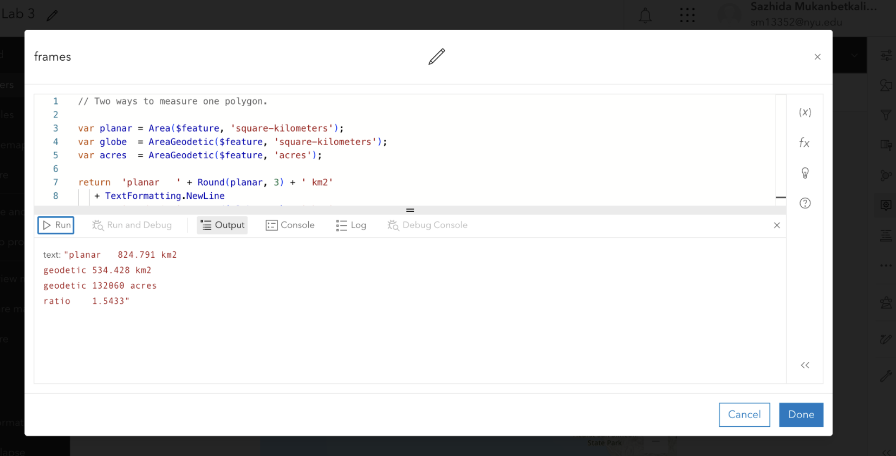
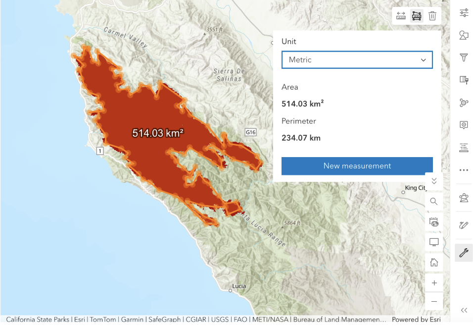
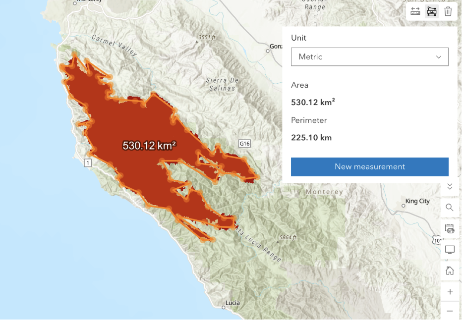
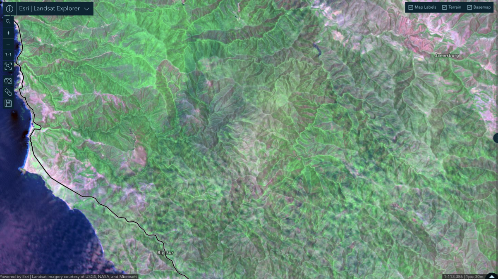
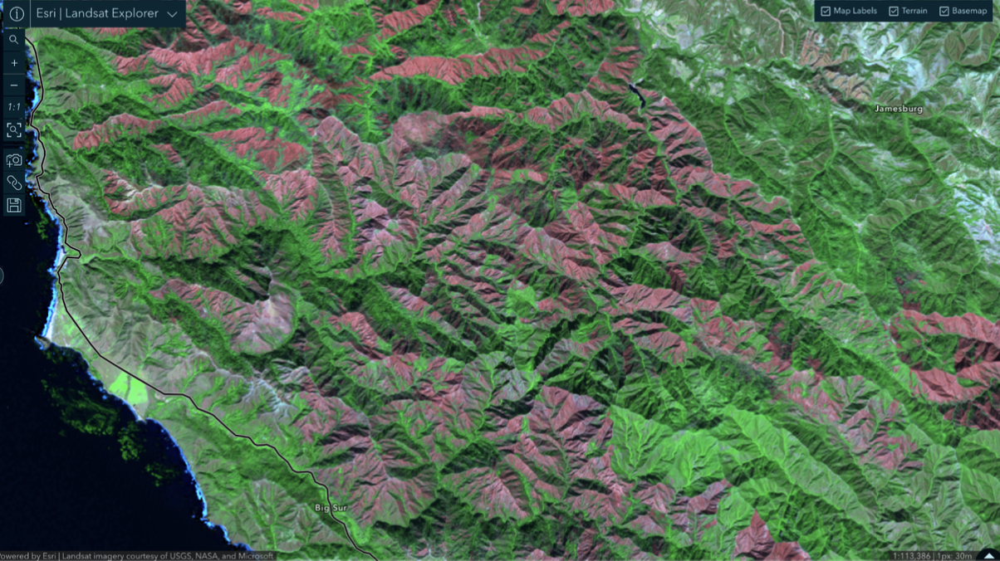
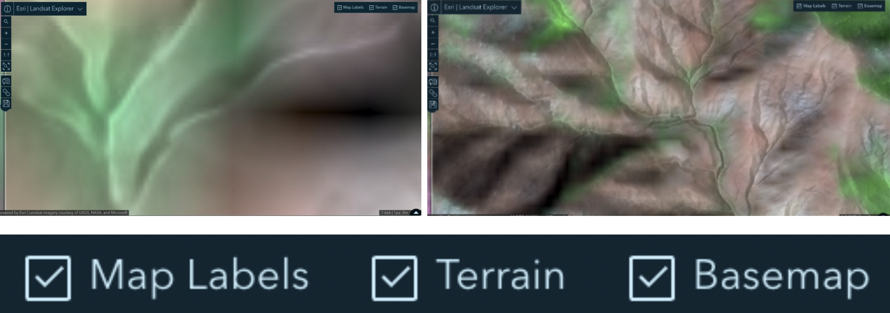
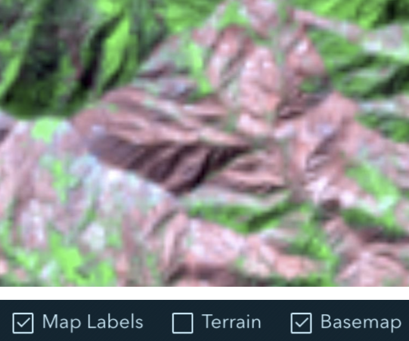
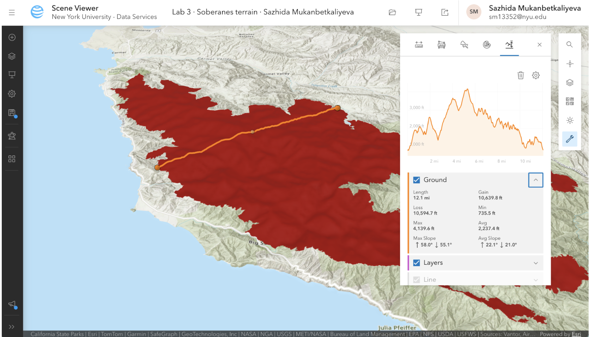
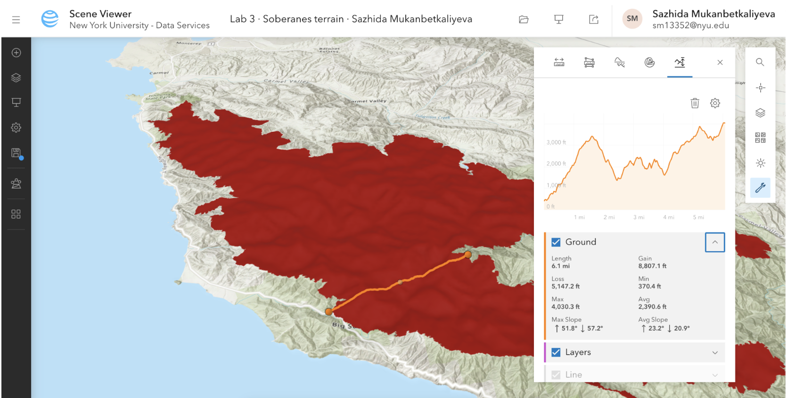

Lab 03 · October 2026
One Perimeter, Three Answers
The question
How much land burned in the 2016 Soberanes Fire in Big Sur, California, and how does the measured area change with projection, raster resolution, and terrain?
The data
I used the Soberanes_Perimeter layer published by Teach_with_GIS in ArcGIS Online. Source layer ↗
For satellite imagery, I used the Landsat 8–9 mission in Esri Landsat Explorer. I compared a pre-fire image from 20 June 2016 with a post-fire image from 26 October 2016.
I also used the ArcGIS elevation surface in Scene Viewer for the terrain and slope analysis.
The perimeter coordinate system was not shown directly in the map interface. I found it only in the service definition as EPSG:3857 — WGS 84 / Pseudo-Mercator (Web Mercator).
The geometry also contains 686 rings smaller than 900 m², which is smaller than one 30 m × 30 m Landsat cell. This shows that some of the boundary detail is finer than the source imagery could actually observe.
The method
I measured the same Soberanes Fire perimeter in several different frames.
In ArcGIS Map Viewer, Area() measured the polygon planarly
in its stored EPSG:3857 Web Mercator frame, while
AreaGeodetic() measured the same polygon geodetically on the
WGS 84 ellipsoid.
I used the following Arcade expression:
var planar = Area($feature, 'square-kilometers');
var globe = AreaGeodetic($feature, 'square-kilometers');
var acres = AreaGeodetic($feature, 'acres');
var rings = Count(Geometry($feature).rings);
return 'planar ' + Round(planar, 3) + ' km2'
+ TextFormatting.NewLine
+ 'geodetic ' + Round(globe, 3) + ' km2'
+ TextFormatting.NewLine
+ 'geodetic ' + Round(acres, 0) + ' acres'
+ TextFormatting.NewLine
+ 'ratio ' + Round(planar / globe, 4)
+ TextFormatting.NewLine
+ 'rings ' + rings;
The main measurement frames I compared were:
- 824.791 km² — planar measurement in EPSG:3857 Web Mercator.
- 534.428 km² — geodetic measurement on the WGS 84 ellipsoid.
- 514.03 km² and 530.12 km² — hand-traced measurements made with the ArcGIS Measurement tool, which measures geodetically.
- 533.929 km² — planar area in UTM Zone 10N.
- 534.182 km² — planar area in California Albers, an equal-area projection.
I also traced the fire perimeter manually to see how much the result changed when the boundary was drawn roughly by hand.


To test raster-resolution sensitivity, I compared the fire boundary with the 30 m Landsat cells. For terrain, I drew two elevation profiles in Scene Viewer and calculated the surface-area factor using 1 / cos(average slope).
For vertical height, I used the EGM2008 geoid model from the GeographicLib geoid calculator. I converted ellipsoidal height to orthometric height using:
H = h − N
The map
The figures below show the Soberanes Fire through satellite imagery, raster resolution, the mapped fire perimeter, and the terrain surface.
Figure 1 · Before and after the fire
I compared Landsat 8–9 Short-wave IR imagery from before and after the Soberanes Fire.


Figure 2 · The Landsat cells
I zoomed into the post-fire imagery until the raster structure became visible. Comparing the image with Terrain turned on and off makes the Landsat cell structure easier to see.


Figure 3 · The mapped fire perimeter
I viewed the Soberanes Fire perimeter in ArcGIS Map Viewer. The perimeter is stored in EPSG:3857 — WGS 84 / Pseudo-Mercator (Web Mercator).
Figure 4 · Terrain and elevation profiles
I used ArcGIS Scene Viewer to examine how the burned area crosses the mountainous terrain. I drew two elevation profiles across different parts of the fire to compare the average slope.


What I found
Areas measured geodetically on the WGS 84 ellipsoid. Source geometry stored in EPSG:3857 (Web Mercator); planar areas in that frame are inflated by sec²(latitude) and are reported here only for comparison.
Measurement frames
| Frame | Area | How I got it |
|---|---|---|
| Web Mercator, planar | 824.791 km² | Area() |
| WGS 84 ellipsoid, geodetic | 534.428 km² | AreaGeodetic() |
| Hand-traced polygon | 514.03 km² | Measurement tool |
| Published incident figure | 534.699 km² | 132,127 acres converted |
| UTM Zone 10N, planar | 533.929 km² | Lab reference |
| California Albers, planar | 534.182 km² | Lab reference |
I would publish the geodetic area of approximately 534.4 km². It avoids the large planar distortion produced by Web Mercator and agrees closely with the equal-area, UTM, and published incident figures.
My hand-traced area was 514.03 km², even though I traced the perimeter roughly in about one minute. This suggests that the measurement frame caused much more disagreement than the rough hand tracing.
Projection sensitivity
| Place | Latitude | Web Mercator area inflation |
|---|---|---|
| Equator | 0.000° | 0.0% |
| Gibson Desert | −23.285° | 18.5% |
| This campus, Pudong | 31.162° | 36.6% |
| Madeira, Portugal | 32.750° | 41.4% |
| Soberanes Fire | 36.326° | 54.1% |
| Fairbanks, Alaska | 64.840° | 453.2% |
For the Soberanes Fire, the predicted Web Mercator area factor was:
sec²(36.326°) ≈ 1.5406
My measured planar-to-geodetic ratio was:
824.791 ÷ 534.428 ≈ 1.5433
These values are very close, showing that the Web Mercator distortion is systematic and predictable from latitude.
Raster-resolution sensitivity
| Sensor | Cell size | Uncertainty band | Share of area |
|---|---|---|---|
| Sentinel-2 | 10 m | 4.42 km² | 0.83% |
| Landsat 8–9 | 30 m | 13.26 km² | 2.48% |
| MODIS | 250 m | 110.49 km² | 20.68% |
| Coarse global product | 500 m | 220.98 km² | 41.37% |
At Landsat resolution, the grid uncertainty is about 2.48%, compared with approximately 54.1% from Web Mercator projection distortion.
One of the narrowest burned fingers I measured was 58.39 m wide.
58.39 ÷ 30 ≈ 1.95 Landsat cells
This suggests that the feature is probably real rather than a single-cell artefact, but its exact width and boundary are still uncertain because it is represented by only about two Landsat cells.
Boundary complexity
The isoperimetric ratio of the fire perimeter was:
4 × π × 824.638 ÷ 556.808² ≈ 0.034
A perfect circle has a value of 1, so this very low value shows that the perimeter is extremely irregular and detailed.
A circle with an area of about 534 km² would have a circumference of only about 82 km, while the fire's geodetic perimeter is approximately 442 km.
My Arcade expression returned 755 rings in Web Mercator. I would therefore publish the area, but I would publish the perimeter only with the source resolution stated beside it because perimeter is much more sensitive to small rings and extra vertices.
Terrain
My first elevation profile had average slopes of 22.1° uphill and 21.0° downhill.
Average slope: (22.1 + 21.0) ÷ 2 = 21.55°
Surface area factor: 1 ÷ cos(21.55°) ≈ 1.075
Surface area: 534.182 × 1.075 ≈ 574.3 km²
My second elevation profile had average slopes of 23.2° uphill and 20.9° downhill.
Average slope: (23.2 + 20.9) ÷ 2 = 22.05°
Surface area factor: 1 ÷ cos(22.05°) ≈ 1.079
Surface area: 534.182 × 1.079 ≈ 576.3 km²
The actual burned ground surface is therefore at least approximately 574.3–576.3 km². The terrain effect is approximately 7.5–7.9%.
For this fire, the three effects were approximately:
Projection: 54.1%
Terrain: 7.5–7.9%
Landsat grid: 2.48%
Geoid and vertical height
| Point | EGM2008 | EGM96 | EGM84 | Spread |
|---|---|---|---|---|
| Soberanes Fire | −32.9779 m | −34.0791 m | −34.7582 m | 1.7803 m |
| This campus | +12.1533 m | +11.4482 m | +11.6075 m | 0.7051 m |
| Everest | −28.4939 m | −28.7408 m | −30.4587 m | 1.9648 m |
I used EGM2008 for the height conversion at the Soberanes Fire.
If the receiver reports an ellipsoidal height of h = 900 m:
H = h − N
H = 900 − (−32.9779)
H = 932.9779 m ≈ 932.98 m
For runoff modelling, I would use orthometric height because water flows downhill according to gravity and the geoid, rather than relative to the mathematical ellipsoid.
What this does not show
The fire perimeter is limited by the 30 m resolution of the Landsat imagery. Features close to or smaller than one cell may disappear, occupy an entire cell, or appear more precise in the vector boundary than the satellite could actually observe.
The terrain calculation is only a lower bound. Using one average slope cannot represent every steep and gentle section of the landscape, so the real burned surface area may be larger than 574.3–576.3 km².
The vertical-height conversion also depends on the geoid model. The three models differed by 1.7803 m at Soberanes, 0.7051 m at the campus, and 1.9648 m at Everest. This means the geoid model used for a height conversion should be stated.
The three sources of disagreement do not always have the same ranking. At a lower latitude, projection distortion would become smaller. With a coarser sensor or a smaller feature, grid uncertainty could become larger. On steeper terrain, terrain correction could become more important.
Reflection
I would publish the geodetic area of approximately 534.4 km² on the WGS 84 ellipsoid. Before publishing it, I would check the coordinate system and the method used to calculate the area. If I had trusted the attribute table without checking the frame, I would have published about 824.638 km², around 290 km² or 54% larger than the geodetic result.
For this fire, projection had the largest effect at about 54%, followed by terrain at about 7.5–7.9%, and the Landsat grid at about 2.5%. This ranking could change at a lower latitude, with a coarser sensor, a smaller feature, or steeper terrain. The terrain effect could not be discovered from the perimeter file alone because it required a separate elevation surface.
Burned acreage can affect insurance settlements. If burned area were measured in Web Mercator without stating the projection, the affected area could be greatly overstated. In a case where an insurance payment depends on acreage, both the claimant and the insurer could be affected because the settlement would be based on a measurement made in an inappropriate display frame.
AI use
I used ChatGPT to help clarify the lab instructions, check my calculations, and check my Arcade and HTML code. I verified the results using ArcGIS outputs, Landsat Explorer, the geoid calculator, and the lab instructions. The measurements, screenshots, and interpretation are my own.
← Back to all labs